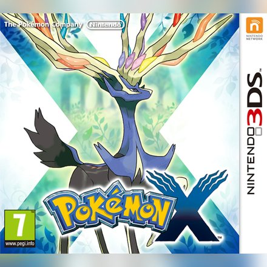
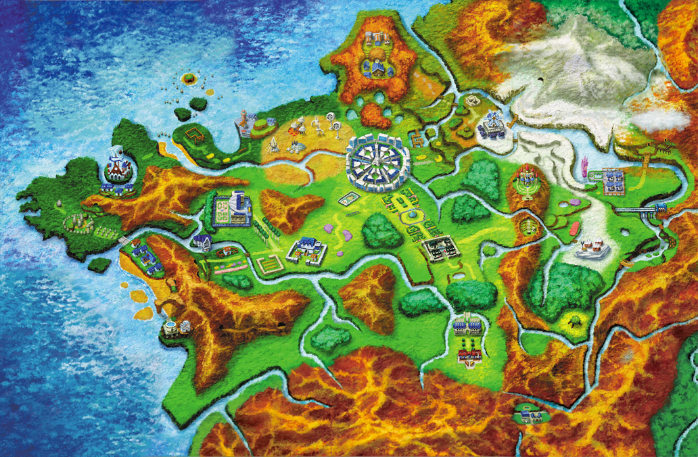
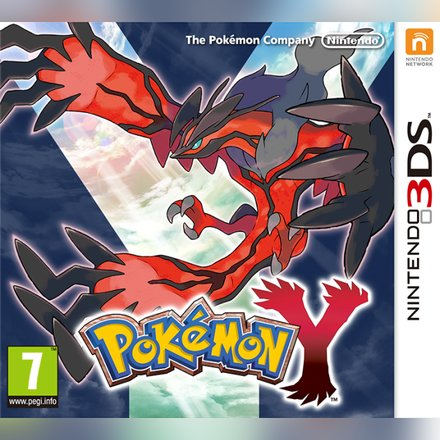
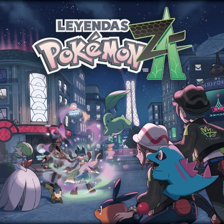
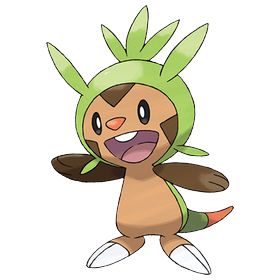
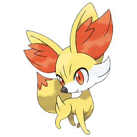
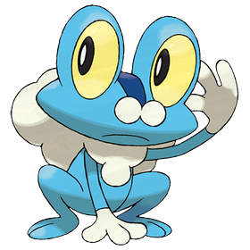

Pokémon X
Nintendo 3DS · 2013
Región de Kalos · X e Y (2013)

Mapa de la región de Kalos.

Nintendo 3DS · 2013

Nintendo 3DS · 2013

Nintendo Switch / Switch 2 · 2025
Pokémon X e Y
Leyendas Pokémon: Z-A


